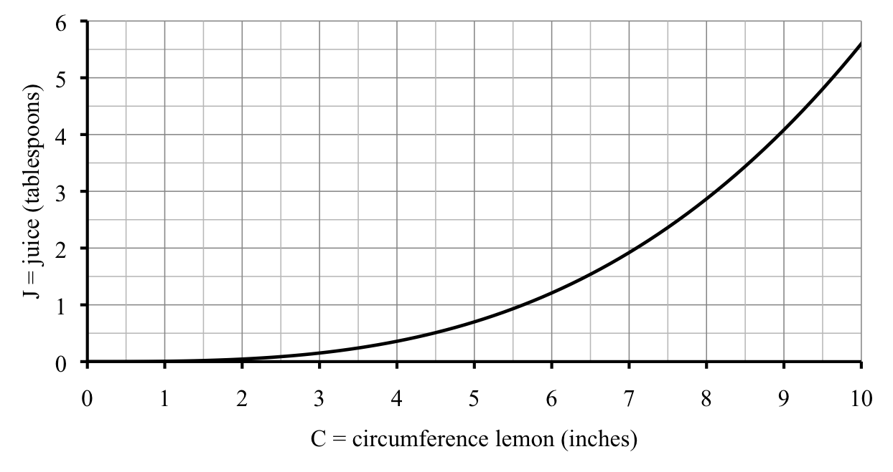

Section 3.3 Solving power equations (and roots)
There’s an old saying - “when life gives you lemons, make lemonade.” But how many lemons do you need? It turns out a reasonable equation describing the juice from a single lemon is given by
\begin{equation*}
J = 0.0056C^3
\end{equation*}
where
\begin{align*}
J \amp= \text{ juice (tablespoons) } \sim \text{ dep} \\
C \amp= \text{ circumference (inches) } \sim \text{ indep}
\end{align*}
In case you’ve forgotten, the circumference is the distance around the lemon. Think of taking wrapping a piece of string around the middle part of the lemon. Then stretch it out on a ruler to see how long it is.
Recipes for lemonade vary widely, but for my recipe calls for 4 tablespoons of lemon juice for each 12 ounce glass. The rest is a syrup made of hot water and sugar, mulled with a sweet herb like basil or mint, then finished with ice and cold water. Yum.
So, how large a lemon would yield 4 tablespoons of juice? Let’s try to guess the answer. For example, a small lemon 7 inches in circumference would yield
\begin{equation*}
J = 0.0056 \ast 7^3 = 0.0056 \times \underline{7} \wedge 3 = 1.9208 \approx 2 \text{ tablespoons}
\end{equation*}
A medium size lemon 8 inches in circumference would yield
\begin{equation*}
J = 0.0056 \ast 8^3 = 0.0056 \times \underline{8} \wedge 3 = 2.8672 \approx 3 \text{ tablespoons}
\end{equation*}
Bet 9 inches is a good next guess. We get
\begin{equation*}
J = 0.0056 \ast 9^3 = 0.0056 \times \underline{9} \wedge 3 = 4.0824 \approx 4 \text{ tablespoons}
\end{equation*}
That was quick! A lemon 9 inches around should produce just over 4 tablespoons of juice.
Much as we have learned to love successive approximation, this chapter is all about solving equations. Remember,
\begin{equation*}
J = 0.0056C^3
\end{equation*}
is a power equation because it fits the template
\begin{equation*}
\text{dep} = k \ast \text{indep}^{n}
\end{equation*}
with power \(n=3\) and proportionality constant \(k=0.0056\text{.}\) Turns out we can solve any power equation symbolically.
Here’s how. We’re looking for \(J = 4\text{.}\) Use our equation \(J=0.0056C^3\) to get
\begin{equation*}
0.0056C^3=4
\end{equation*}
We want to find the value of \(C\text{,}\) so we can divide both sides by 0.0056 to get
\begin{equation*}
\frac{\cancel{0.0056}C^3}{\cancel{0.0056}}=\frac{4}{0.0056}
\end{equation*}
which simplifies to
\begin{equation*}
C^3 = \frac{4}{0.0056}= 4 \div 0.0056 = 714.2857\ldots
\end{equation*}
We have found \(C^3\text{.}\) How can we “undo” the \(\wedge 3\) to find \(C\text{?}\) The answer: take the cube root of each side. (More about roots at the end of this section.) That means
\begin{equation*}
\sqrt[3]{C^3} = \sqrt[3]{714.2857\ldots}
\end{equation*}
which simplifies to
\begin{equation*}
C = \sqrt[3]{714.2857\ldots} =3 \sqrt[x]{~\text{ }} 714.2857
= 8.9390\ldots \approx 8.9 \text{ inches}
\end{equation*}
as expected, just under 9 inches. (More about the \(\sqrt[x]{~\text{ }}\) key later too.)
A look at the graph confirms our result.

Now, what goes better with lemonade than lemon cheesecake? For that we need lemon zest. Zest is what you get when you grate the lemon peel in long skinny strips. As with juice, the amount of lemon zest depends on the size of the lemon. Our variables are
\begin{align*}
Z \amp= \text{ amount of lemon zest (tablespoons) } \sim \text{ dep} \\
C \amp= \text{ circumference (inches) } \sim \text{ indep}
\end{align*}
and an equation is
\begin{equation*}
Z=0.018C^2
\end{equation*}
We have another power equation, this time with power \(n=2\) and proportionality constant \(k=0.018\text{.}\)
My lemon cheesecake recipe calls for \(1 \tfrac12\) tablespoons of zest. There are various sized lemons at the store. How large a lemon should I buy? A small lemon of circumference 7 inches produces less than 1 tablespoon of zest because
\begin{equation*}
Z=0.018\ast7^2 = 0.018 \times \underline{7} \wedge 2 = 0.082 < 1
\end{equation*}
so that’s not large enough.
Let’s use successive approximations, summarizing our guesses in a table. Of course, we don’t really need this precise an answer, but it’s good practice. Notice \(1 \tfrac12 = 1 + \tfrac12 = 1 + 1 \div 2 = 1.5\text{.}\)
| \(C\) | 7 | 8 | 9 | 10 | 9.5 | 9.3 | 9.2 | 9.1 |
| \(Z\) | 0.882 | 1.152 | 1.458 | 1.8 | 1.6245 | 1.55682 | 1.52352 | 1.49058 |
| vs. 1.5 | low | high | low | high | high | high | high | low |
We need a large lemon, somewhere between 9.1 and 9.2 inches around. Truth is, I’ll just buy the biggest lemon I can find because extra lemon zest looks wonderful on top of the cheesecake.
We are supposed to be practicing solving the equation. Here goes. We want \(Z=1.5\text{.}\) Use our equation \(Z=0.018C^2\) to get
\begin{equation*}
0.018C^2=1.5
\end{equation*}
We want to find the value of \(C\text{,}\) so we can divide both sides by 0.018 to get
\begin{equation*}
\frac{\cancel{0.018}C^2}{\cancel{0.018}}=\frac{1.5}{0.018}
\end{equation*}
which simplifies to
\begin{equation*}
C^2 = \frac{1.5}{0.018}= 1.5 \div 0.018 = 83.333333\ldots
\end{equation*}
Take the square root of each side to get
\begin{equation*}
\sqrt{C^2} = \sqrt{83.333333\ldots}
\end{equation*}
which simplifies to
\begin{equation*}
C = \sqrt{83.333333\ldots}
=\sqrt{~\text{ }} 83.333333
= 9.128709292\ldots \approx 9.13 \text{ inches}
\end{equation*}
as expected, between 9.1 and 9.2 inches.
As when solving linear equations, notice that we do the opposite operation in reverse order from the usual order of operations. To evaluate a power equation we would first raise to the power and then multiply. To solve a power equation we first divide (that is the opposite of multiplying) and then we take a root (that is the opposite of raising to a power).
As promised, a brief discussion of roots is in order. Here’s the deal. Roots essentially “undo” powers. What this means is, for example, we know
\begin{equation*}
10^2=10 \times 10 =100
\end{equation*}
but it’s quicker to calculate it using powers as
\begin{equation*}
10^2 = 10 \wedge 2 = 100
\end{equation*}
We say 10 squared is 100. The square root of a number is just whatever number you would square to get that number. So, for example, \(\sqrt{100} = 10\) because you would square 10 to get 100. Many calculators have a special square root key that looks like \(\sqrt{~\text{ }}\) so we get
\begin{equation*}
\sqrt{100} = \sqrt{~\text{ }} 100 = 10
\end{equation*}
Your calculator might insert a parenthesis with the square root, in which case you should (but don’t need to) close it before hitting \(=\text{,}\) like this
\begin{equation*}
\sqrt{100} = \sqrt{~\text{ }} ( 100 ) = 10
\end{equation*}
Your calculator might not have this key, or might need the square root after the number. Ask a classmate or your instructor or search online if you can’t figure it out.
The same idea works for higher powers. Like
\begin{equation*}
10^3 =10 \times 10 \times 10 = 1{,}000
\end{equation*}
That’s really
\begin{equation*}
10^3 = 10 \wedge 3 = 1{,}000
\end{equation*}
and we say 10 cubed is 1,000. The cube root of a number is whatever number you would cube to get that number. So, for example, \(\sqrt[3]{1{,}000} = 10\text{.}\) Many calculators have a special root key that looks like \(\sqrt[x]{~\text{ }}\text{.}\) That \(x\) looks similar to multiplication (\(\times\)), but it isn’t. The \(x\) is like a placeholder for the real root you want - for a cube root \(x\) is just 3.
Here’s how to use that root key. First you type in the root you want (3), second you use that key (\(\sqrt[x]{~\text{ }}\)), and last you type in the number you’re taking the root of (1,000) like this
\begin{equation*}
\sqrt[3]{1{,}000} = 3\sqrt[x]{~\text{ }}1{,}000= 10
\end{equation*}
Like with squareroots, your calculator might introduce a parenthesis, or you might do a slightly different order. You might have to use a shift or second key to get to the root key. On many graphing calculators the \(\sqrt[x]{~\text{ }}\) key is one of the MATH functions, so you have to type something like MATH 5 to get it. Again, ask if you need help figuring it out.
There is a small chance that your calculator doesn’t have roots. In that case there is a strange-looking alternative
\begin{equation*}
\sqrt[3]{1{,}000} = 1{,}000 \wedge (1 \div 3)= 10
\end{equation*}
Note the necessary parentheses. This process works for square roots too.
\begin{equation*}
\sqrt{100} = 100 \wedge (1 \div 2)= 10
\end{equation*}
Bet you see how this idea of roots generalizes. The \(n\)th root of a number is whatever number you would raise to the \(n\)th power to get the number. Stated in terms of equations we have
Do you know …
-
What a “power” equation is?
-
What we mean by square root, cube root, and \(n\)th root?
-
How to calculate square roots, cube roots, and \(n\)th roots on your calculator?
-
How to evaluate the Root Formula on your calculator?
-
When to use the Root Formula? Ask your instructor if you need to remember the Root Formula or it will be provided during the exam.
-
How to solve a power equation?
-
What the graph of a power function looks like?
If you’re not sure, work the rest of exercises and then return to these questions. Or, ask your instructor or a classmate for help.
Exercises Exercises
Exercises 1-4 are available in a separate workbook format.
1.
(a)
Set up and solve an equation using the Root Formula to find the diameter of a personal pizza (\(P=1\)). Answer to the nearest inch.
(b)
Set up and solve an equation using the Root Formula to find the diameter of an extra large pizza to serve 6 people. Answer to the nearest inch.
2.
The weight of a wood cube is a function of the length of the sides. A cube with sides each \(E\) inches long has weight \(W\) ounces according to the equation
\begin{equation*}
W = 0.76\, E^3
\end{equation*}
(a)
What is the weight of a cube with sides 2 inches long? 3 inches?
(b)
Draw a graph showing how the weight depends on the side length. Include \(E=0\text{.}\)
(c)
Set up and solve an equation to find the length of the side of a wood cube weighing 8 ounces.
(d)
Repeat for 1 pound (that is 16 ounces).
3.
Suppose a car gas tank is designed to hold enough fuel to drive 350 miles. (That is fairly average.) That means the size tank, \(G\) gallons, is a function of the fuel efficiency, \(F\) miles per gallon (mpg), according to the equation
\begin{equation*}
\displaystyle G = \frac{350}{F}
\end{equation*}
(Story also appears in 2.4.2)
(a)
My Honda Accord’s tank holds about 16 gallons. According to the equation, what is the corresponding fuel efficiency? Set up and solve the equation. Start solving by multiplying both sides by \(F\text{.}\) Note: you will not need to take a root.
(b)
My ex-husband’s Honda Civic’s tank holds only 13 gallons. According to the equation, what is the corresponding fuel efficiency. Set up and solve the equation.
4.
Moose bought a commemorative football jersey for $150 twelve years ago. Now he is planning to sell it and is interested in what the effective return (equivalent annual percent increase) on his investment might be for various prices. If $\(J\) is the current value of the jersey and \(g\) is the annual growth factor, then
\begin{equation*}
J=150\, g^{12}
\end{equation*}
For each part, first solve for \(g\) using the Root Formula, then calculate \(r=g-1\text{.}\) The effective return is \(r\) written as a percentage.
(a)
(b)
Find the effective return if the current value is $350.
(c)
Find the effective return if the current value is $400.
5.
Recall our lemon zest formula \(Z=0.018C^2\) where \(C\) is the circumference of the lemon, in inches, and \(Z\) is the amount of lemon zest, in tablespoons.
(a)
Use the information we found earlier to draw a graph of the function. Include values \(0 \le C \le 10\text{.}\)
(b)
Set up and solve an equation to find the size lemon needed for 1 tablespoon of zest.
(c)
Suppose the formula holds for grapefruit too. I don’t know of any recipe that calls for grapefruit zest; it is very bitter! But grapefruit is notorious for interacting with certain medications, and so we’re collecting some zest for an experiment. Let’s say we need \(\tfrac14\) cup of zest. How large a grapefruit will we need? Set up and solve an equation to answer. Use that 1 cup = 16 tablespoons.
6.
Wind turbines are used to generate electricity. For a particular wind turbine, the equation
\begin{equation*}
W = 2.4 S^3
\end{equation*}
can be used to calculate the amount of electricity generated (\(W\) watts) for a given wind speed (\(S\) mph), over a fixed period of time.
(a)
Set up and solve an equation to determine the wind speed that will generate 12,500 watts of electricity.
(b)
Repeat for 45,000 watts.
7.
Mom always said to sit close to the lamp when I was reading. The intensity of light \(L\text{,}\) measured in percentage (%) that you see from a lamp depends on your distance from the lamp, \(F\) feet as described by the formula
\begin{equation*}
L=\frac{100}{F^2}
\end{equation*}
(a)
I am most comfortable reading in good light, say 70% intensity. According to the equation, how far away can I sit from the lamp? Use successive approximation to guess the answer to the nearest foot. Then set up and solve an equation. Answer to the nearest inch.
(b)
For reading a magazine 35% intensity is enough light. According to the equation, how far away can I sit from the lamp? Use successive approximation to guess the answer to the nearest foot. Then set up and solve an equation. Answer to the nearest inch.
8.
The lake by Rodney’s condo was stocked with bass (fish) 10 years ago. There were initially 400 bass introduced. Rodney wonders what the annual percent increase of the bass has been and realizes he can calculate it from the number of fish now. He will use the equation
\begin{equation*}
B=400 g^{10}
\end{equation*}
where \(B\) is the number of bass in the lake now and \(g\) is the annual growth factor. For each number of bass, first solve for \(g\) using the Root Formula, then calculate \(r=g-1\text{.}\) The percent increase is \(r\) written as a percent.
(a)
Find the annual percent increase if there are \(B=3{,}000\) bass now.
(b)
Find the annual percent increase if there are \(B=4{,}000\) bass now.
9.
If you drop a rock from a high place, it falls \(R\) feet in \(T\) seconds where
\begin{equation*}
R = 16T^2
\end{equation*}
(a)
How far does the rock fall in 2 seconds? In 4 seconds?
(b)
Is the rock falling faster during the first two seconds (\(T=0\) to \(T=2\)) or during the second two seconds (\(T=2\) to \(T=4\))? Calculate the rate of change to decide.
(c)
Tia dropped a rock from her apartment window that’s 300 feet above ground. Will the rock have hit the ground by 4 seconds after it was dropped?
(d)
If you evaluate at \(T=5\text{,}\) what value of \(R\) do you get? What does this value mean in the story? Again assume the rock is dropped from 300 feet up.
(e)
When does the rock hit the ground? Set up and solve an equation. Hint: what value of \(R\) do you solve for?
(f)
Now suppose we have a new variable, \(H\text{,}\) which represents the height of the rock Tia dropped after \(T\) seconds, write a new equation for \(H\) as a function of \(T\text{.}\)
(g)
Show how to set up and solve an equation using this new equation to find when the rock hits the ground. Hint: what value of \(H\) do you solve for now?
10.
Wynter has a pretty decent job. He is paid a salary of $780 per week but his hours vary week-to-week. Even though Wynter is not paid by the hour, he can figure out what his hourly wage would be depending on the number of hours he works using the equation
\begin{equation*}
E = \frac{780}{H}
\end{equation*}
where if he works \(H\) hours, then he’s earning the equivalent of $\(E\)/hour.
(a)
Make a table showing Wynter’s equivalent hourly wage if he works 40, 50, or 60 hours a week.
(b)
Wynter was complaining that things have been so busy lately at work that he’s earning the equivalent of only $9.25/hr. How many hours a week does that correspond to?
(c)
Wynter was hoping to earn the equivalent of $14/hour. How many hours a week does that correspond to?
(d)
Draw a graph illustrating how Wynter’s equivalent hourly wage decreases as a function of the number of hours he works. Include a few extreme values such as 10 hours and 100 hours to better see the shape of the graph.